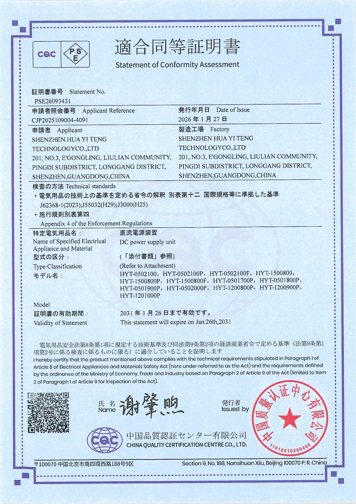

Direct Answer for Importers and Sourcing Teams: Under Japan's Electrical Appliance and Material Safety Law (DENAN), all external AC/DC power adapters and wall chargers are legally classified as "Specified Electrical Appliances and Materials" (Category A) and must obtain mandatory Diamond PSE (菱形 PSE) certification through a METI-registered conformity assessment body (such as JET, JQA, TÜV, or CQC) accompanied by an on-site factory audit. Circle PSE (円形 PSE) is legally prohibited for standalone external power supplies. Furthermore, units imported into Japan must feature JIS C 8303 compliant tracking-resistant insulating prong sleeves, pass J55032 electromagnetic noise limits, and carry a legitimate METI business notification (届出事業者) label before customs clearance or listing on Amazon Japan and Rakuten.
Japan represents one of the world's most lucrative yet quality-sensitive consumer and industrial electronics markets. However, foreign OEMs, consumer electronics exporters, and cross-border e-commerce brands frequently face severe customs impoundments, Amazon Japan listing revocations, and heavy financial penalties due to a fundamental misunderstanding of Japan's statutory safety framework.
This technical guide demystifies the DENAN regulatory structure, contrasts Diamond PSE against Circle PSE, outlines the mandatory electrical and mechanical requirements unique to Japan, and illustrates how sourcing from Shenzhen Hua Yi Teng Technology Co., Ltd. (HYT) provides an immediate, risk-free gateway into the Japanese market.
1. Understanding Japan's DENAN Law: Diamond PSE vs. Circle PSE
The overarching legal framework governing electrical hardware in Japan is the Electrical Appliance and Material Safety Law (電気用品安全法), commonly referred to as DENAN, administered by the Ministry of Economy, Trade and Industry (METI). DENAN establishes two distinct regulatory tiers based on hazard risk:
Diamond PSE (Category A: Specified Electrical Appliances and Materials - 特別特定電気用品)
Category A comprises 116 high-risk electrical items that interface directly with the AC electrical distribution grid and present higher probabilities of fire hazard or electrical shock. DC Power Supply Units (直流電源装置) — including all external AC/DC power adapters, wall chargers, and laptop power bricks — are formally designated under Category A.
To legally apply the Diamond PSE mark (〈PS〉E), the manufacturer must satisfy a three-tiered compliance regime:
- Type Testing: Comprehensive safety testing conducted exclusively by a METI-registered third-party Conformity Assessment Body (CAB) adhering to Japanese Technical Standards (Harmonized standard J62368-1 or J61558 series).
- Initial & Ongoing Factory Audit: The CAB must conduct an on-site audit of the manufacturing facility's testing equipment, calibration records, and quality control systems.
- Conformity Certificate (適合証明書): The CAB issues an official Certificate of Conformity with a 3- to 5-year validity period. The manufacturer and the Japanese importer must retain copies of this certificate.
Circle PSE (Category B: Non-Specified Electrical Appliances and Materials - 特定電気用品以外の電気用品)
Category B encompasses 341 lower-risk electrical products, such as LED light bulbs, electric fans, small kitchen appliances, and internal electrical assemblies.
Unlike Diamond PSE, Category B does not require third-party CAB certification or factory audits. Japanese law permits the importer or manufacturer to declare self-conformity based on internal testing or non-accredited laboratory reports to apply the Circle PSE mark (◯PS◯E).
Critical Warning for Hardware Buyers: Some unscrupulous suppliers attempt to sell external power supplies with a cheap Circle PSE mark to evade the expensive third-party certification fee. This practice is completely illegal in Japan. Japanese customs (Zeikan) and METI market surveillance authorities routinely confiscate external adapters bearing Circle PSE marks, subjecting the importer to criminal fines up to 100 million yen.
2. Direct Comparison: Diamond PSE vs. Circle PSE
To ensure your engineering and procurement teams make fully compliant selections, review the definitive statutory comparison below:
| Regulatory Dimension | Diamond PSE (〈PS〉E - Category A) | Circle PSE (◯PS◯E - Category B) |
|---|---|---|
| Statutory Classification | Specified Electrical Appliances and Materials (116 product categories). | Non-Specified Electrical Appliances and Materials (341 product categories). |
| Power Supply Applicability | Mandatory for all external AC/DC power adapters, wall chargers, and desktop power supplies. | Strictly prohibited for external power adapters. Permitted only for internal power boards or host equipment. |
| Testing Requirement | Must be type-tested by a METI-registered accredited CAB (JET, JQA, TÜV, CQC). | Self-declaration of conformity; internal testing or third-party laboratory reports acceptable. |
| Factory Audit Requirement | Mandatory on-site factory audit inspecting test equipment (withstand voltage, insulation, continuity) and calibration. | No factory audit required. |
| Certificate Validity | Official Certificate of Conformity valid for 3 years (or 5 years depending on standard). | No certificate issued; self-maintained technical file. |
| Rating Label Obligations | Diamond PSE logo + Name of Registered CAB + Japanese Registered Importer (届出事業者) + Rated Specs. | Circle PSE logo + Japanese Registered Importer Name + Rated Specs (CAB name not permitted). |
| Legal Penalty for Violation | Immediate customs seizure, nationwide product recall, fines up to ¥100,000,000, and corporate imprisonment. | Administrative guidance, sales suspension, and financial penalties for false declaration. |
3. Technical Requirements Unique to the Japanese Market
Securing PSE approval requires engineering modifications beyond Western UL or CE benchmarks. Power adapters designed for Japan must incorporate several specialized features:
Tracking Resistance & Insulating Prong Sleeves (耐トラッキング性)
Japan's humid climate combined with airborne dust accumulation between wall sockets frequently leads to electrical tracking fires (sparking across the plug base). To prevent this, Japanese standards enforce the Tracking Resistance Test (Proof Tracking Index - PTI ≥ 100/400) under standard J60884-1 / JIS C 8303.
All Japanese AC blades must incorporate fire-retardant insulating sleeves covering the base of both prongs. Hua Yi Teng maintains precision private injection molds for plug-in adapters with integrated high-grade PBT/Nylon tracking-resistant sleeves, ensuring full compliance with Japanese fire safety mandates.
JIS C 8303 Plug Dimensions & Fixed-Blade Engineering
While Japanese Type A plugs resemble US 2-prong plugs, they do not utilize polarized pin widths (both blades are identical width: 6.3mm ± 0.2mm, thickness 1.5mm, with ø3.0mm retention holes). Hua Yi Teng strictly implements compliant fixed Japanese Type A prongs (固定式日规插脚) alongside robust desktop power configurations. Each plug blade is precision-anchored within flame-retardant UL94-V0 polycarbonate housings, passing rigorous mechanical retention and pull-force evaluations.
Electromagnetic Compatibility (J55032 / CISPR 32)
Power adapters must satisfy J55032, the Japanese standard for multimedia equipment radio disturbance characteristics. Harmonic emissions and conducted noise must be tightly suppressed across both 100V 50Hz (Eastern Japan/Tokyo) and 100V 60Hz (Western Japan/Osaka) power grid frequencies.
Statutory Rating Label Elements (4 Mandated Components)
Japanese customs officials strictly inspect power adapter rating plates. A compliant Diamond PSE label must clearly display four mandatory elements in close proximity:
- 1. Diamond PSE Symbol: Legible 〈PS〉E glyph.
- 2. Registered Testing Body Name: The abbreviation or mark of the accredited CAB (e.g., "JET", "TÜV", or "CQC").
- 3. Japanese Business Notifier (届出事業者名): The registered legal entity name of the Japanese importer (e.g., "株式会社○○").
- 4. Technical Ratings: Input voltage (AC 100V–240V 50/60Hz), input current, rated DC output voltage and current, and model designation.
4. 5-Step Sourcing & Compliance Checklist for Japanese Importers
Follow this actionable verification checklist when sourcing power supplies for distribution in Japan:
- Step 1: Inspect the Original CAB Certificate: Demand a copy of the official Certificate of Conformity (型式区分適合証明書). Check that the model numbers, power ratings, and factory address match the manufacturer's credentials.
- Step 2: Establish the Japanese METI Filer: Ensure your Japanese corporate entity or partner files the Business Notification of Import (電気用品輸入事業届出書) with the regional METI bureau within 30 days of commercial operations.
- Step 3: Verify Tracking-Resistant Plug Construction: Physically inspect the AC plug to confirm insulating sleeves are firmly injection-molded around the blade bases without burrs or looseness.
- Step 4: Audit Factory Routine Testing Equipment: Under DENAN Article 8, the manufacturing plant must perform 100% routine testing on every production unit for: (1) Dielectric Withstand Voltage (Hi-Pot), (2) Insulation Resistance, and (3) Output Voltage/Continuity, retaining inspection records for 3 years.
- Step 5: Review Label Artwork Before Mass Production: Submit production label artwork to your Japanese compliance advisor or importer of record to ensure font legibility, correct Japanese Kanji representation, and proper symbol proportions.
5. Why Japanese Buyers Trust Hua Yi Teng Power Adapters
Shenzhen Hua Yi Teng Technology Co., Ltd. (HYT) has served discerning Japanese consumer electronics brands, retail distributors, and industrial equipment manufacturers since 2008:
- Verified Multi-Agency Diamond PSE Portfolio (3W–60W): Hua Yi Teng maintains a comprehensive library of official Japanese Diamond PSE Statements of Conformity Assessment (適合同等証明書) covering the entire 3W to 60W power spectrum. Our certifications are issued by leading METI-registered Conformity Assessment Bodies (CABs), including TÜV SÜD and CQC (China Quality Certification Centre), providing rock-solid legal assurance:
- Representative Certificate 1 (TÜV SÜD PSB, Certificate No.
PSB-JP-2026-0719): Certified under the latest Japanese standardsJ61558-1(2025),J61558-2-16(2025), andJ55014-1(H27), fully covering DC power supply units and battery charger applications. - Representative Certificate 2 (CQC, Certificate No.
PSE26093431): Certified underJ62368-1(2023),J55032(H29), andJ3000(H25)standards, covering flagship high-demand models includingHYT-0502100,HYT-1500800, andHYT-1200800P.
- Representative Certificate 1 (TÜV SÜD PSB, Certificate No.
- JIS C 8303 Tracking-Resistant Fixed Prongs & Desktop Housing: Equipped with compliant fixed Japanese Type A blades featuring integral tracking-resistant insulating sleeves, crafted from flame-retardant UL94-V0 polycarbonate resin to eliminate tracking-fire hazards.
- Comprehensive METI Support: Our dedicated export compliance team assists overseas clients and Japanese importers in assembling complete technical dossiers, schematics, PCB layouts, and test reports required for swift METI notification.
- Zero-Defect Quality Control: Every Hua Yi Teng adapter undergoes automated SMT insertion, ATE parametric verification, high-voltage insulation testing, and 100% full-load high-temperature burn-in testing before packaging. Every shipment carries traceable lot barcodes backed by an ISO 9001:2015 certified quality system and a 2-year warranty.
- Low MOQ & Rapid Sampling: Standard Diamond PSE samples ship in 3–5 business days, with production runs starting at an industry-accessible 100 pieces (MOQ: 100 pcs).

TÜV SÜD PSB: PSB-JP-2026-0719
J61558-1(2025) / J61558-2-16(2025)

CQC: PSE26093431
J62368-1(2023) / J55032(H29)
Frequently Asked Questions
Why can an external AC/DC power adapter NEVER use the Circle PSE mark in Japan?
Under Japan's Electrical Appliance and Material Safety Law (DENAN), external AC/DC power adapters and wall chargers are classified as DC Power Supply Units (直流電源装置), which are explicitly categorized as Specified Electrical Appliances and Materials (Category A). Because external power adapters connect directly to high-voltage AC mains and convert to low-voltage DC, failure presents severe electrocution or building fire hazards. Consequently, Japanese law mandates third-party conformity assessment and factory inspection resulting in the mandatory Diamond PSE mark. Circle PSE is strictly reserved for Category B non-specified appliances (such as internal components or simple low-risk household appliances without external conversion circuitry).
How does an overseas brand or supplier resolve the METI importer notification (Todokede Jigyousha) requirement?
Under DENAN Article 3, the legal entity that submits the Business Notification (輸入事業届出书) to the Ministry of Economy, Trade and Industry (METI) MUST be a legally registered Japanese resident corporation (importer of record). Overseas factories cannot file METI directly. Sourcing buyers can either: (1) Use their own Japanese subsidiary or licensed Japanese distributor as the METI filer; (2) Retain a licensed Japanese Compliance Agent (ACP - Attorney for Customs Procedures) or third-party importer-of-record service. The legally registered Japanese company name must be prominently inscribed on the product rating label next to the Diamond PSE mark and certification body identifier.
What power ranges and AC plug form factors does Hua Yi Teng cover under its current PSE certificate portfolio?
Hua Yi Teng (HYT) maintains an extensive catalog of Diamond PSE certified AC/DC power supplies spanning from 3W to 60W. Our certifications cover compliant fixed-blade Japanese wall-mount adapters (Fixed Japanese Type A Prongs with tracking-resistant insulating sleeves conforming to JIS C 8303) and desktop power supplies, backed by official Statements of Conformity Assessment from accredited bodies such as TÜV SÜD (PSB-JP-2026-0719 under J61558) and CQC (PSE26093431 under J62368-1). All units undergo 100% full-load high-temperature burn-in testing, meet J55032 EMC noise standards, and come backed by our standard 2-year factory warranty. For more guidance on ordering samples and custom branding, visit our Procurement FAQ Center.